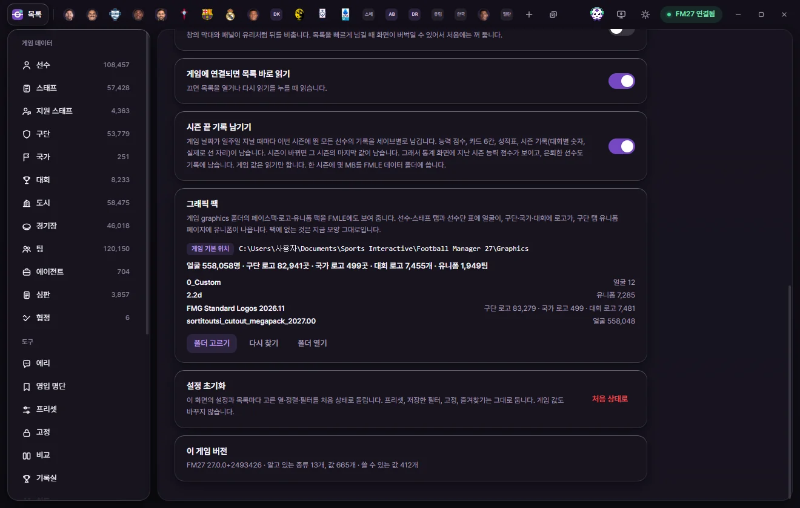

도구
그래픽 팩
게임 graphics 폴더에 깔아 둔 페이스팩·로고·유니폼 팩을 FMAX 화면에도 보여 줍니다. 설정에서 폴더를 확인하고 바꿉니다.
무엇이 보이나요
FMAX는 게임의 graphics 폴더에 있는 팩을 읽어 FMAX 화면에도 그림을 붙입니다. 팩에 없는 것은 원래 모양 그대로입니다. FMAX는 이 폴더를 읽기만 합니다.
| 그림 | 보이는 곳 |
|---|---|
| 얼굴 | 선수·스태프 등 사람 탭 머리, 목록과 빠른 찾기의 작은 그림, 구단 탭 선수단·스태프 표의 이름 앞, 선수 카드, 기록실과 구단 기록 |
| 구단 로고 | 구단 탭 머리, 목록의 구단 이름 앞 작은 로고. 팀은 그 구단의 로고를 씁니다 |
| 국가 로고, 대회 로고 | 그 탭 머리와 목록의 작은 로고 |
| 유니폼 | 구단 탭 › 유니폼 페이지의 '그래픽 팩 유니폼'(홈, 원정, 서드) |

설정에서 폴더 확인하기
왼쪽 도구 설정 화면의 그래픽 팩 칸에서 봅니다.


- 폴더: 지금 쓰는 폴더 경로와 '게임 기본 위치' 또는 '직접 고른 폴더' 표시가 보입니다. 게임 기본 위치는
문서\Sports Interactive\Football Manager 27\graphics입니다. - 찾은 그림 수: 얼굴 n명 · 구단 로고 n곳 · 국가 로고 n곳 · 대회 로고 n개 · 유니폼 n팀.
- 팩 목록: 팩 폴더마다 찾은 그림 수가 보입니다.
| 단추 | 하는 일 |
|---|---|
| 폴더 고르기 | 다른 graphics 폴더를 고릅니다. 고르면 그 폴더의 팩을 새로 읽습니다 |
| 게임 기본 위치로 | 직접 고른 폴더를 쓸 때만 보입니다. 게임 기본 위치로 돌아갑니다 |
| 다시 찾기 | 지금 폴더를 처음부터 다시 읽습니다 |
| 폴더 열기 | 그 폴더를 탐색기로 엽니다 |
팩을 찾는 방법
FMAX는 게임과 같은 방식으로 그림을 찾습니다. 팩 안의 config.xml이 어떤 그림이 누구의 얼굴·로고·유니폼인지 정해 둔 것을 읽습니다. 그래서 config.xml이 없는 팩은 FMAX에도 보이지 않습니다.
- 두 팩이 같은 사람이나 구단을 맡으면 폴더 이름 순서로 앞의 팩을 씁니다.
- 팩을 더하거나 빼면, FMAX가
config.xml이 바뀐 것을 알아채고 다시 읽습니다(최대 20초 간격으로 확인). 바로 보고 싶으면 다시 찾기를 누릅니다. - 선수 카드에서 '게임에도 넣기'로 넣은 사진은 graphics 폴더 안 FMAX 폴더에 들어가며, 이 목록에서는 뺍니다.
이럴 때는
| 화면 글 | 할 일 |
|---|---|
| 이 폴더가 없습니다 | 팩이 들어 있는 graphics 폴더를 폴더 고르기로 고릅니다 |
| 이 폴더에서 얼굴·로고·유니폼을 맞춘 config.xml을 찾지 못했습니다 | 팩이 graphics 폴더 안에 제대로 풀려 있는지, 팩에 config.xml이 있는지 확인합니다 |
| 게임에 연결된 FMAX 창에서 그래픽 폴더를 읽습니다 | FMAX 앱에서 봅니다 |
선수 카드의 얼굴은 페이스팩이 있으면 그것을, 없으면 FMAX에서 고른 사진을 씁니다(얼굴 사진).